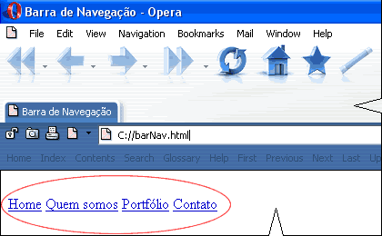
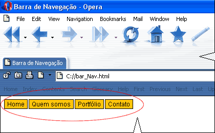
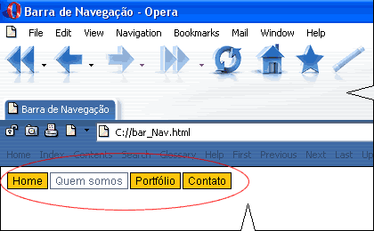

Construção de uma barra de navegação
Introdução
Neste tutorial mostrarei uma das técnicas de construção de uma barra de navegação com uso das CSS.
Ao final da leitura deste tutorial você estará capacitado a construir uma barra de navegação com rollover e controlável por um arquivo de Folha de Estilos em Cascata.
Técnicas de construção de uma barra de navegação
Uma técnica bastante simples para a construção de uma barra de navegação consiste em se enclausurar os links dentro um parágrafo.
Outra, seria através do uso de listas com declaração inline (para torná-la horizontal).
Vamos abordar neste tutorial a primeira opção e com 04 (quatro) links.
Adiante você verá que este código é válido para qualquer número de links, podendo ser adaptado a qualquer necessidade atual e previsão de expansão futura - tamanho da barra de navegação.
Este código servirá de base para desenvolvermos todo o estudo proposto neste tutorial.
<p>
<a href="caminho/arquivo.html" >Home</a>
<a href="caminho/arquivo.html">Quem somos</a>
<a href="caminho/arquivo.html">Portfólio</a>
<a href="caminho/arquivo.html">Contato</a>
</p>Este código HTML é renderizado pelo navegador e apresentado na tela do computador conforme mostrado na figura abaixo:

Classe e estilização da barra de navegação
Nossa barra de navegação está enclausurada dentro de um elemento HTML, <p> (parágrafo).
Vamos estilizar este elemento, sem contudo afetar TODOS os parágrafos da página.
Não vamos querer que TODOS os parágrafos da página tenham o mesmo aspecto da barra de navegação.
Criaremos então uma classe para aplicar no parágrafo que contém a barra de navegação.
Chamemos a classe de .barNav e vamos supor os seguintes parâmetros de estilização:
- família de letras: Arial, Verdana,Helvetica, sans-serif;
- tamanho da letra: 12px;
- cor da letra: preta (#000) em fundo laranja (#FFC50C);
- decoração: links sem sublinhado;
- borda de 1px em cor preta (#000)
- espaçamento:em cima e em baixo=1px e nos lados=5px;
- margens a direita: 1px (controla o espaçamento entre os links).
Nota: As propriedades padding e margin controlam:
padding: o espaçamento entre as bordas e o texto de cada link;
margin: o espaço entre os links.
As regras CSS para o estado inicial dos links
Vamos primeiramente aplicar estilos para os links em seu estado inicial.
E aqui entra o seletor a dentro da classe barNav
A seguir as regras CSS para os parâmetros que estabelecemos para os links na nossa barra de navegação:
.barNav a {
font:12px Arial,Verdana,Helvetica,sans-serif;
color: #000;
text-decoration: none;
background: #FFC50C;
text-align: center;
padding: 1px 5px;
margin-right: 1px;
border: 1px solid #000;
}As regras CSS para o estado mouse sobre os links
A seguir aplicaremos estilos para os links no estado quando o mouse passa sobre eles, para simular o efeito rollover proposto.
Sejam os seguintes parâmetros para o estado hover dos links:
- cor da letra: cinza (#666) em fundo claro (#FCFCFC);
- decoração: links sem sublinhado;
- borda de 1px em cor cinza (#666)
E as regras CSS
.barNav a:hover {
color: #666;
background: #FCFCFC;
border: 1px solid #666;
}O quatro estados dos links
Os links podem ter até 4 estados diferentes, refletindo cada um, uma ação diferente do usuário:
1) o estado "UP" (estado inicial, quando a página é carregada) já está estilizado;
2) o estado "OVER" é estilizado com a:hover também foi estilizado;
3) o estado "DOWN" é estilizado com a:active não foi tratado neste tutorial, propositadamente, ficando como exercício para você estudar;
4) o estado "VISITED" para links já visitados com a:visited, também não tratado neste tutorial, propositadamente, ficando como exercício para você estudar;
O código completo
A seguir o código completo de uma página contendo a barra de navegação estilizada conforme este tutorial para você copiar-colar e estudar, fazendo suas adaptações e mudanças.
<html>
<head>
<title>Barra de Navegação</title>
<style type="text/css">
.barNav a {
font: 12px Arial, Verdana,Helvetica,sans-serif;
color: #000;
text-decoration: none;
background: #FFC50C;
text-align: center;
padding: 1px 5px;
margin-right:1px;
border: 1px solid #000;
}
.barNav a:hover {
color: #666;
background: #FCFCFC;
border: 1px solid #666;
}
-->
</style>
</head>
<body>
<p class="barNav">
<a href="caminho/arquivo.html" >Home</a>
<a href="caminho/arquivo.html">Quem somos</a>
<a href="caminho/arquivo.html">Portfólio</a>
<a href="caminho/arquivo.html">Contato</a>
</p>
</body>
</html>O resultado final
A barra de navegação renderizada no navegador no estado em repouso - estado UP

A barra de navegação renderizada no navegador no estado com o mouse em cima do link "Quem somos" - estado OVER.
